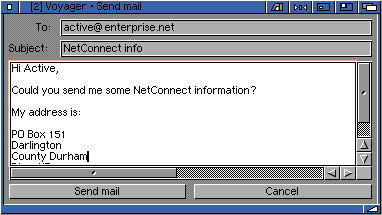

Voyager 3.5.2 (amigazen project). Original V3 manual by Chris Wiles, 1999.
5.3 Sending E-Mail with Voyager
When browsing the web you will notice that there is the possibility of mailing people from Voyager. Although Voyager is not an email program you can send basic email without having to run a specialised program.
Many, if not all, web pages allow you to contact the person who created the site with a "mailto:" link.
If you click on of these "mailto:" (or email links) Voyager will present you another GUI that allows you to create your email.

Enter a subject into the subject: box and create your mail.
Remember: you need to have your email address in the Voyager preferences in order to send email. If you do not, you will not be able to receive a response to your message.
You also need to have your post server correctly set (this is the server that sends your mail for you).
Examples of post servers include:
post.demon.co.uk mail.enterprise.net smtp.netcomuk.co.uk
Remember, however, you can't receive mail with Voyager.